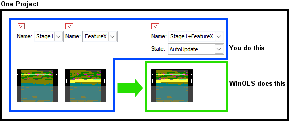
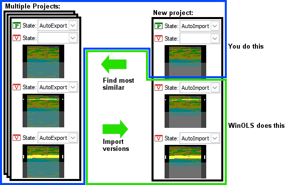

|
AutoUpdate + AutoImport |

  
|
|
AutoUpdate + AutoImport |
|
This function requires WinOLS 5.21 + FeatureUpdate |
AutoUpdate and AutoImport are mechanisms to automatically import/combine/update data from other versions/projects.
AutoUpdate
Here a version receives the map values of one or more other versions of the same project. Both the source version(s) and the target version must be created by the user beforehand. You can combine several source versions. You can have multiple versions calculated by AutoUpdate. Offset is not supported.
A project can contain multiple target versions that combine source versions in different ways. If a source version is changed, then the target version is automatically updated when it is opened.

Procedure:
| · | Give all source versions unique, meaningful, and short names. |
| · | Mark the target version with the version status "AutoUpdate" or "AutoUpdateAndExport" (see below). |
| · | The version name of the target version must consist of the names of the source versions, connected by plus signs. Example: Stage1+FeatureX+OptionAlpha |
Tips:
| · | Maps that contain changes in a source version always overwrite the complete map in the target version. |
| · | Changes in the rest of the project are also deleted by default. You can disable this by putting a plus in front of the first version name. Example: +Stage1+FeatureX+OptionAlpha |
| · | Changes outside of maps are not transferred. If necessary, create a map for this purpose. |
| · | If you do not want to change the version name, you can alternatively enter the info in the version comment like this: @auto source Stage1+FeatureX+OptionAlpha |
AutoImport
Similar source projects are searched automatically and their source versions are imported by Import changes. The user has to create the source projects and the original of the target project. The further versions are created and filled automatically. By default, only changes within maps are transferred.
Procedure:
| · | Mark the source projects and the desired source versions with the project/version property "AutoExport" (or "AutoUpdateAndExport"). |
| · | Target projects must have the project status "AutoImport". |

Notes:
| · | WinOLS creates versions here and marks them with "AutoImport". You should not edit AutoImport versions manually, because WinOLS can delete and recreate the version (which would cause your changes to be lost). |
| · | The versions are always imported 1:1, there is no combination (like with AutoUpdate). However, you can take over versions previously calculated by AutoUpdate into AutoImport. |
| · | When transferring the changes, the offset is determined automatically. This always includes the possibility of errors. |
Parameters:
You can define additional conditions in the project comment of the source project to prevent error transfers and increase performance.
| · | Minimum similarity: (default value: 70%) @auto min_similarity 90% |
| · | Project properties that must match: (default value: empty) @auto check_property ECU.ECUProd, ECU.ECUStg |
WinOLS always chooses the most similar version that meets all your conditions.
If the data is transferred, then you can configure stuff in the project or version comment of the source project:
| · | Whether tolerance should be used when matching the maps: (default value: 0%) @auto transfer_tolerance 10% |
| · | Whether the map structure should be transferred: (default value: yes) @auto transfer_maps no |
| · | With which mode the changes should be transferred: (default value: relative) @auto transfer_mode absolute |
| · | Whether also maps without changes in the source project should be transferred: (default value: yes) @auto transfer_unchanged no |
| · | Whether changes in the source project should outside of maps should be transferred: (default value: no) @auto transfer_outsidemaps yes Warning: You should definitely combine this with "transfer_mode absolute". This is because if WinOLS does not know the bit width, relative/percentage can result in incorrect values. |
AutoUpdate + AutoImport:
You can combine both features by marking the versions as "AutoUpdateAndExport". Then, on the one hand, they are assembled from other versions of your own project and, on the other hand, they serve as a template for other (AutoImport) projects.
Performance:
The mentioned functions manage considerable amounts of data and can slow down WinOLS noticeably. To minimize the effort you can:
| · | AutoImport: Define as strict conditions (parameters) as possible. |
| · | AutoImport: Keep the number of source projects low |
| · | Disable the encryption of versions (F12 > Miscellaneous) |
See also: